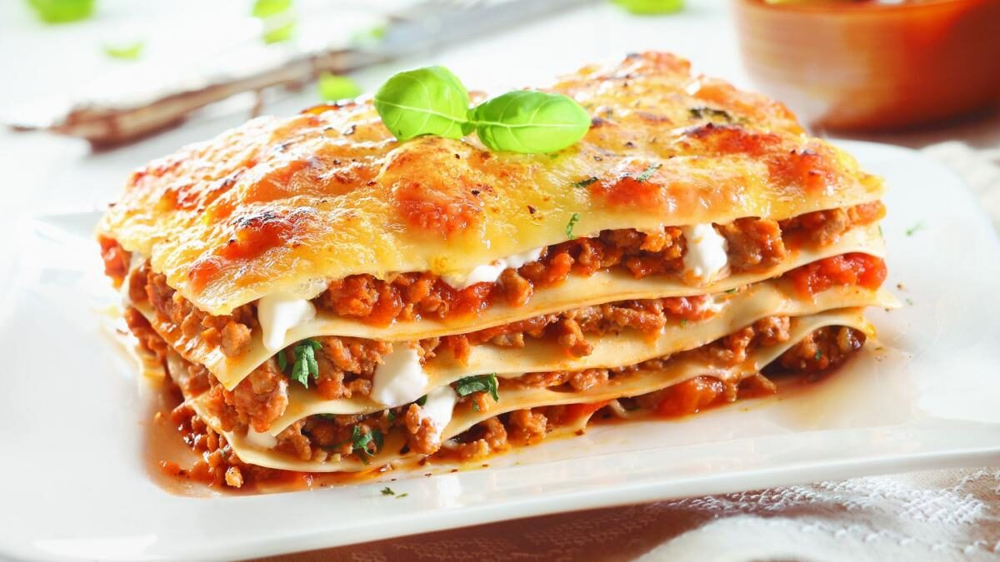
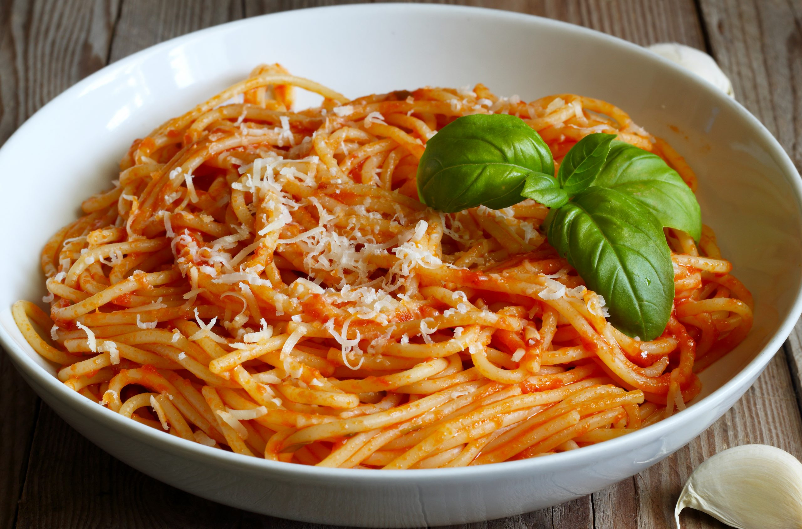
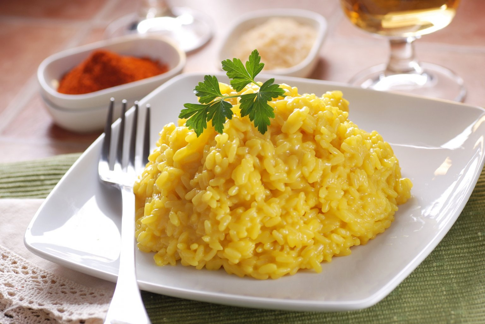

Pizza Margherita
Ingredientes
• Molho de tomate
• Folhas de manjericão
• Azeite de oliva
Lasanha
Ingredientes
• Massa de lasanha
• Molho Bolonhesa
• Molho Bechamel (Molho branco)
• Queijo Parmesão ralado
Spaguetti
Ingredientes
• Macarrão tipo espaguete
• Manjericão
• Azeite
• Queijo parmesão
• Molho de tomate
Risotto
Ingredientes
-
• Arroz
• Margarina
• Vinho branco
• Manteiga
• Caldo de galinha
• Cebola
• Pimenta-do-reino